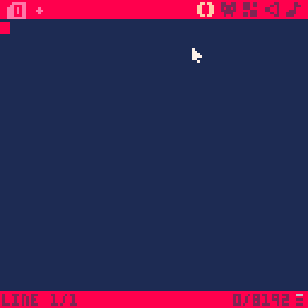
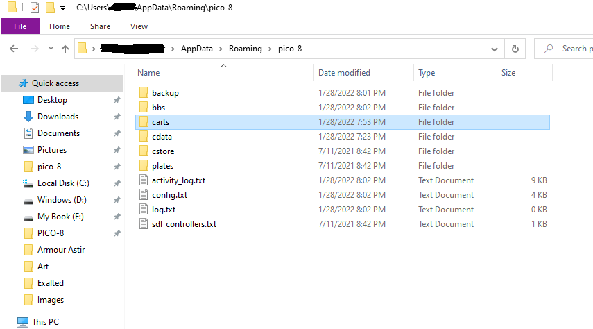

This is a pretty bare bones summary of the assignment, basically it's just showing competence with the platform.
First, I demonstrate that I can load a cart from the Lexaloffle BBS.
Then, I demonstrate that I managed to find a Pico-8 cart that doesn't have sprites. And consequently, I copy pasted the code into a new cart and ran it.
This is just a demonstration of the classic Hello World assignment using Pico-8's limited Lua language.
This bit is just exploring the Splore menu.
And this is an image of my file system... I am uncomfortable with this being online for some reason.
